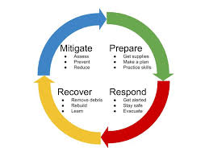

Floods are among the most common natural disasters, often resulting in costly damage and long-term recovery efforts. Floods can strike with little warning, whether caused by heavy rainfall, storms, or rising river levels. Proper flood preparedness can help you safeguard your property, reduce damage, and ensure the safety of your loved ones. It’s essential to have a plan in place, and part of that plan should include a reliable flood barrier like Stormbag’s sandless sandbags.
